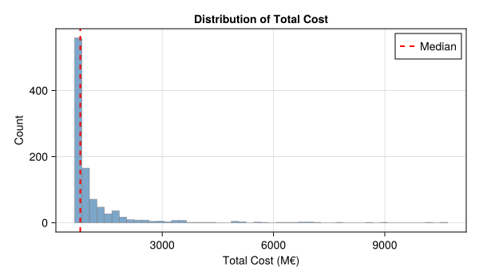
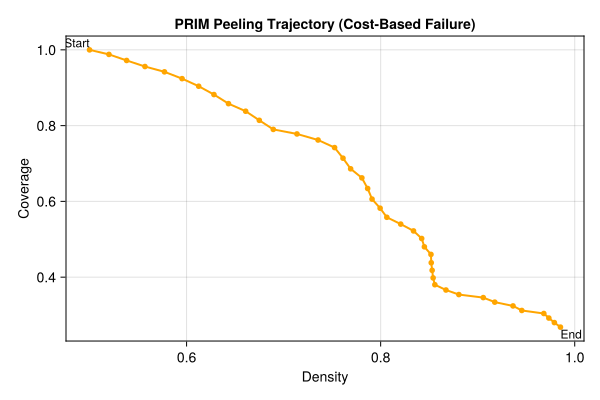

# Install SimOptDecisions if needed
try
using SimOptDecisions
catch
import Pkg
try
Pkg.rm("SimOptDecisions")
catch
end
Pkg.add(; url="https://github.com/dossgollin-lab/SimOptDecisions")
Pkg.instantiate()
using SimOptDecisions
endLab 8: Scenario Discovery
CEVE 421/521
1 Overview
In Lab 7 you evaluated house elevation decisions against 10,000 SLR trajectories and computed robustness metrics. Those metrics ranked decisions across scenarios. They did not identify which conditions led to failure.
In this lab you’ll use scenario discovery to answer a different question:
Under what conditions does my chosen strategy fail?
You’ll work with the Eijgenraam dike heightening model — a cost-benefit framework for setting flood protection standards in the Netherlands (Eijgenraam et al., 2014). You’ll run the model across 1,000 uncertain futures, label each as success or failure, and use PRIM (Patient Rule Induction Method) to find the combinations of uncertainties that drive failure (Friedman & Fisher, 1999).
The key insight: the answer depends on how you define “failure.”
References:
2 Before Lab
Complete these steps BEFORE coming to lab:
Accept the GitHub Classroom assignment (link on Canvas)
Clone your repository:
git clone https://github.com/CEVE-421-521/lab-08-S26-yourusername.git cd lab-08-S26-yourusernameOpen the notebook in VS Code or Quarto preview
Run the first code cell — it will install any missing packages (may take 10-15 minutes the first time)
Submission: You will render this notebook to PDF and submit the PDF to Canvas. See Section 7 for details.
3 Setup
Run the cells in this section to load packages, the model, and generate the ensemble. You don’t need to modify any of this code — just run it and read the comments.
3.1 Packages
if !isfile("Manifest.toml")
import Pkg
Pkg.instantiate()
end
using CairoMakie
using DataFrames
using Distributions
using Random
using Statistics
include("eijgenraam.jl")
include("prim.jl")
Random.seed!(2026)3.2 The Eijgenraam Dike Model
The Eijgenraam model (Eijgenraam et al., 2014) computes the total societal cost of flood protection for a dike ring in the Netherlands. It balances two competing forces:
- Investment cost: building the dike higher is expensive, and costs grow exponentially with height
- Expected flood losses: without protection, losses grow over time due to sea level rise and economic growth
The annual flood probability at year \(t\) is:
\[ P(t) = P_0 \exp\bigl(\alpha \eta\, t - \alpha\, H(t)\bigr) \]
where \(P_0\) is the initial flood probability, \(\alpha\) controls how sensitive flood probability is to water level, \(\eta\) is the rate of water level rise, and \(H(t)\) is the cumulative dike heightening at time \(t\).
Notice that \(\alpha\) appears twice: it makes flood probability grow faster with rising water (\(\alpha \eta t\)), but it also makes each cm of dike height more effective (\(-\alpha H\)). This means \(\alpha\)’s effect on failure is non-monotonic — something scenario discovery can reveal.
3.3 Policy: When and How Much to Heighten
Our policy has two levers:
- When to heighten the dike (\(t_h\) years from now)
- How much to heighten it (\(u\) cm)
There’s a genuine tradeoff: deferring the investment saves money (discounting), but the dike ring is unprotected while we wait.
3.4 Generate the Ensemble
We sample 1,000 scenarios by drawing each uncertain parameter uniformly within plausible bounds. This gives a well-spread input space — ideal for PRIM.
config = EijgenraamConfig() # ring 15 defaults
n_scenarios = 1000
scenarios = map(1:n_scenarios) do _
EijgenraamScenario(;
P0=rand(Uniform(0.0005, 0.004)),
alpha=rand(Uniform(0.025, 0.075)),
eta=rand(Uniform(0.4, 1.2)),
V0=rand(Uniform(5000.0, 25000.0)),
delta=rand(Uniform(0.02, 0.06)),
)
end4 Act 1: Explore the Model
4.1 Run the Ensemble
We fix a policy — heighten the dike by 100 cm immediately (year 0) — and run all 1,000 scenarios through the model.
policy = EijgenraamPolicy(; t_heighten=0.0, u_heighten=100.0)
results = explore(config, scenarios, [policy])4.2 Failure Probability Trajectories
The plot below shows how flood probability evolves over time for each scenario. Each line is one scenario. The dashed red line is the current legal safety standard (1/2,000 per year).
let
T = config.T
max_Pf = config.max_Pf
t_h = SimOptDecisions.value(policy.t_heighten)
u = SimOptDecisions.value(policy.u_heighten)
years = 0:T
fig = Figure(; size=(750, 400))
ax = Axis(
fig[1, 1];
xlabel="Year",
ylabel="Failure Probability (1/year)",
title="Flood Probability Over Time",
yscale=log10,
limits=(nothing, (1e-6, 1e-1)),
)
# Plot each trajectory
max_pf_vals = Array(results.max_failure_prob)[1, :]
for (i, s) in enumerate(scenarios)
P0 = SimOptDecisions.value(s.P0)
alpha = SimOptDecisions.value(s.alpha)
eta = SimOptDecisions.value(s.eta)
traj = failure_prob_trajectory(P0, alpha, eta, u, t_h, T)
exceeds = max_pf_vals[i] > max_Pf
color = exceeds ? (:red, 0.08) : (:gray, 0.05)
lines!(ax, collect(years), traj; color=color, linewidth=0.5)
end
# Safety standard
hlines!(ax, [max_Pf]; color=:red, linestyle=:dash, linewidth=2, label="Safety standard (1/2000)")
axislegend(ax; position=:lb)
fig
end
4.3 Your Turn: Choose a Policy
# Your code here# Your code here5 Act 2: Scenario Discovery
Now we use the default policy results to ask: under what conditions does this policy fail?
5.1 Step 1: Label Success and Failure
We define failure as the maximum flood probability exceeding the legal safety standard (1/2,000 per year). This is the same standard used in Dutch law for coastal dike rings.
max_pf = Array(results.max_failure_prob)[1, :] # extract from YAXArray
failures = max_pf .> config.max_Pf
n_fail = sum(failures)
println("$(n_fail) of $(n_scenarios) scenarios are failures ($(round(100 * n_fail / n_scenarios; digits=1))%)")625 of 1000 scenarios are failures (62.5%)5.2 Step 2: Build the Input Matrix
To run PRIM, we need the scenario parameters as a plain matrix. Each row is one scenario, each column is one uncertain input.
param_names = ["P₀", "α", "η", "V₀", "δ"]
X = hcat(
[SimOptDecisions.value(s.P0) for s in scenarios],
[SimOptDecisions.value(s.alpha) for s in scenarios],
[SimOptDecisions.value(s.eta) for s in scenarios],
[SimOptDecisions.value(s.V0) for s in scenarios],
[SimOptDecisions.value(s.delta) for s in scenarios],
)5.3 Step 3: Run PRIM
PRIM peels away slices of the input space to find a “box” where failures concentrate. It traces a path from high coverage (large box, catches most failures) to high density (small box, almost all scenarios in the box are failures).
trajectory = prim_peel(X, failures)
prim_summary(trajectory, param_names)Step | Coverage | Density | Support | Restricted dimensions
-----|----------|---------|---------|----------------------
1 | 100.0% | 62.5% | 1000 | (full space)
2 | 99.5% | 65.5% | 950 | η ≥ 0.435
3 | 99.4% | 68.8% | 903 | η ≥ 0.4744
4 | 98.6% | 71.8% | 858 | η ≥ 0.5139
5 | 97.4% | 74.6% | 816 | η ≥ 0.5512
6 | 96.3% | 77.6% | 776 | η ≥ 0.5803
7 | 94.4% | 79.9% | 738 | η ≥ 0.6159
8 | 92.3% | 82.2% | 702 | P₀ ≥ 0.0007, η ≥ 0.6159
9 | 89.8% | 84.1% | 667 | P₀ ≥ 0.0009, η ≥ 0.6159
10 | 87.2% | 86.0% | 634 | P₀ ≥ 0.0009, η ≥ 0.6407
11 | 85.0% | 88.1% | 603 | P₀ ≥ 0.0009, η ≥ 0.667
12 | 83.2% | 90.8% | 573 | P₀ ≥ 0.0009, η ≥ 0.6944
13 | 80.6% | 92.5% | 545 | P₀ ≥ 0.0009, η ≥ 0.7162
14 | 78.4% | 94.6% | 518 | P₀ ≥ 0.0009, η ≥ 0.7413
15 | 75.8% | 96.1% | 493 | P₀ ≥ 0.0009, η ≥ 0.7644
16 | 73.0% | 97.2% | 469 | P₀ ≥ 0.0011, η ≥ 0.7644
17 | 70.2% | 98.4% | 446 | P₀ ≥ 0.0011, α ≤ 0.0728, η ≥ 0.7644
18 | 67.2% | 99.1% | 424 | P₀ ≥ 0.0011, α ≤ 0.0708, η ≥ 0.7644
19 | 64.0% | 99.3% | 403 | P₀ ≥ 0.0012, α ≤ 0.0708, η ≥ 0.7644
20 | 61.0% | 99.5% | 383 | P₀ ≥ 0.0014, α ≤ 0.0708, η ≥ 0.7644
21 | 58.1% | 99.7% | 364 | P₀ ≥ 0.0015, α ≤ 0.0708, η ≥ 0.7644
22 | 55.4% | 100.0% | 346 | P₀ ≥ 0.0016, α ≤ 0.0708, η ≥ 0.7644let
coverages = [b.coverage for b in trajectory]
densities = [b.density for b in trajectory]
fig = Figure(; size=(600, 400))
ax = Axis(
fig[1, 1];
xlabel="Density (fraction of box that are failures)",
ylabel="Coverage (fraction of all failures captured)",
title="PRIM Peeling Trajectory",
)
scatterlines!(ax, densities, coverages; markersize=8, linewidth=2)
# Label first and last
text!(ax, densities[1], coverages[1]; text="Start", align=(:right, :bottom), fontsize=12)
text!(
ax,
densities[end],
coverages[end];
text="End",
align=(:left, :top),
fontsize=12,
)
fig
end
5.4 Step 4: Interpret a PRIM Box
Pick a box from the trajectory that you think gives a good balance of coverage and density. A good starting point is a box with density above 70% and coverage above 50%.
# Find a box with density > 0.7 (or the last box if none qualify)
good_idx = findfirst(b -> b.density > 0.7, trajectory)
if good_idx === nothing
good_idx = length(trajectory)
end
box = trajectory[good_idx]
println("Selected box $(good_idx):")
println(" Coverage: $(round(100 * box.coverage; digits=1))%")
println(" Density: $(round(100 * box.density; digits=1))%")
println(" Support: $(box.support) scenarios")
println()
initial = trajectory[1]
for (j, name) in enumerate(param_names)
lo_changed = box.lower[j] > initial.lower[j]
hi_changed = box.upper[j] < initial.upper[j]
if lo_changed || hi_changed
println(" $name: [$(round(box.lower[j]; sigdigits=3)), $(round(box.upper[j]; sigdigits=3))]")
end
endSelected box 4:
Coverage: 98.6%
Density: 71.8%
Support: 858 scenarios
η: [0.514, 1.2]5.5 Step 5: Change the Failure Definition
Now let’s define failure differently. Instead of “does the flood probability exceed the safety standard?”, ask: “does the total cost (investment + expected losses) exceed a threshold?”
First, look at the distribution of total costs to pick a reasonable threshold.
let
costs = Array(results.total_cost)[1, :]
fig = Figure(; size=(600, 350))
ax = Axis(fig[1, 1]; xlabel="Total Cost (M€)", ylabel="Count", title="Distribution of Total Cost")
hist!(ax, costs; bins=50, color=(:steelblue, 0.7), strokewidth=0.5, strokecolor=:gray)
vlines!(ax, [median(costs)]; color=:red, linestyle=:dash, linewidth=2, label="Median")
axislegend(ax; position=:rt)
fig
end
Now label failures using the cost-based definition and re-run PRIM.
total_costs = Array(results.total_cost)[1, :]
cost_threshold = median(total_costs)
cost_failures = total_costs .> cost_threshold
println("Cost-based failures: $(sum(cost_failures)) of $(n_scenarios) (threshold: $(round(cost_threshold; digits=1)) M€)")Cost-based failures: 500 of 1000 (threshold: 790.6 M€)cost_trajectory = prim_peel(X, cost_failures)
prim_summary(cost_trajectory, param_names)Step | Coverage | Density | Support | Restricted dimensions
-----|----------|---------|---------|----------------------
1 | 100.0% | 50.0% | 1000 | (full space)
2 | 98.8% | 52.0% | 950 | η ≥ 0.435
3 | 97.2% | 53.8% | 903 | P₀ ≥ 0.0007, η ≥ 0.435
4 | 95.6% | 55.7% | 858 | P₀ ≥ 0.0007, η ≥ 0.435, V₀ ≥ 6066.1829
5 | 94.2% | 57.7% | 816 | P₀ ≥ 0.0007, η ≥ 0.435, V₀ ≥ 6066.1829, δ ≤ 0.0584
6 | 92.4% | 59.5% | 776 | P₀ ≥ 0.0007, η ≥ 0.4737, V₀ ≥ 6066.1829, δ ≤ 0.0584
7 | 90.4% | 61.2% | 738 | P₀ ≥ 0.0009, η ≥ 0.4737, V₀ ≥ 6066.1829, δ ≤ 0.0584
8 | 88.2% | 62.8% | 702 | P₀ ≥ 0.0009, α ≤ 0.0731, η ≥ 0.4737, V₀ ≥ 6066.1829, δ ≤ 0.0584
9 | 85.8% | 64.3% | 667 | P₀ ≥ 0.0009, α ≤ 0.0731, η ≥ 0.5098, V₀ ≥ 6066.1829, δ ≤ 0.0584
10 | 83.8% | 66.1% | 634 | P₀ ≥ 0.0009, α ≤ 0.0731, η ≥ 0.5547, V₀ ≥ 6066.1829, δ ≤ 0.0584
11 | 81.4% | 67.5% | 603 | P₀ ≥ 0.0009, α ≤ 0.0731, η ≥ 0.5879, V₀ ≥ 6066.1829, δ ≤ 0.0584
12 | 79.0% | 68.9% | 573 | P₀ ≥ 0.0009, α ≤ 0.0731, η ≥ 0.5879, V₀ ≥ 6066.1829, δ ≤ 0.0568
13 | 77.8% | 71.4% | 545 | P₀ ≥ 0.0009, α ≤ 0.0731, η ≥ 0.5879, V₀ ≥ 6066.1829, δ ≤ 0.055
14 | 76.2% | 73.6% | 518 | P₀ ≥ 0.0009, α ≤ 0.0731, η ≥ 0.5879, V₀ ≥ 6066.1829, δ ≤ 0.0536
15 | 74.2% | 75.3% | 493 | P₀ ≥ 0.0009, α ≤ 0.0731, η ≥ 0.5879, V₀ ≥ 6066.1829, δ ≤ 0.0519
16 | 71.4% | 76.1% | 469 | P₀ ≥ 0.001, α ≤ 0.0731, η ≥ 0.5879, V₀ ≥ 6066.1829, δ ≤ 0.0519
17 | 68.6% | 76.9% | 446 | P₀ ≥ 0.001, α ≤ 0.0731, η ≥ 0.5879, V₀ ≥ 6913.9267, δ ≤ 0.0519
18 | 66.2% | 78.1% | 424 | P₀ ≥ 0.001, α ≤ 0.0731, η ≥ 0.5879, V₀ ≥ 7686.1245, δ ≤ 0.0519
19 | 63.4% | 78.7% | 403 | P₀ ≥ 0.0012, α ≤ 0.0731, η ≥ 0.5879, V₀ ≥ 7686.1245, δ ≤ 0.0519
20 | 60.6% | 79.1% | 383 | P₀ ≥ 0.0013, α ≤ 0.0731, η ≥ 0.5879, V₀ ≥ 7686.1245, δ ≤ 0.0519
21 | 58.2% | 79.9% | 364 | P₀ ≥ 0.0015, α ≤ 0.0731, η ≥ 0.5879, V₀ ≥ 7686.1245, δ ≤ 0.0519
22 | 55.8% | 80.6% | 346 | P₀ ≥ 0.0015, α ≤ 0.0731, η ≥ 0.5879, V₀ ≥ 8531.9182, δ ≤ 0.0519
23 | 54.0% | 82.1% | 329 | P₀ ≥ 0.0015, α ≤ 0.0731, η ≥ 0.5879, V₀ ≥ 9264.5363, δ ≤ 0.0519
24 | 52.2% | 83.4% | 313 | P₀ ≥ 0.0015, α ≤ 0.0731, η ≥ 0.5879, V₀ ≥ 10178.1503, δ ≤ 0.0519
25 | 50.2% | 84.2% | 298 | P₀ ≥ 0.0015, α ≤ 0.0731, η ≥ 0.6185, V₀ ≥ 10178.1503, δ ≤ 0.0519
26 | 48.0% | 84.5% | 284 | P₀ ≥ 0.0016, α ≤ 0.0731, η ≥ 0.6185, V₀ ≥ 10178.1503, δ ≤ 0.0519
27 | 46.0% | 85.2% | 270 | P₀ ≥ 0.0018, α ≤ 0.0731, η ≥ 0.6185, V₀ ≥ 10178.1503, δ ≤ 0.0519
28 | 43.8% | 85.2% | 257 | P₀ ≥ 0.0019, α ≤ 0.0731, η ≥ 0.6185, V₀ ≥ 10178.1503, δ ≤ 0.0519
29 | 41.8% | 85.3% | 245 | P₀ ≥ 0.002, α ≤ 0.0731, η ≥ 0.6185, V₀ ≥ 10178.1503, δ ≤ 0.0519
30 | 39.8% | 85.4% | 233 | P₀ ≥ 0.002, α ≤ 0.0731, η ≥ 0.6315, V₀ ≥ 10178.1503, δ ≤ 0.0519
31 | 38.0% | 85.6% | 222 | P₀ ≥ 0.002, α ≤ 0.0731, η ≥ 0.6666, V₀ ≥ 10178.1503, δ ≤ 0.0519
32 | 36.6% | 86.7% | 211 | P₀ ≥ 0.002, α ≤ 0.0731, η ≥ 0.6881, V₀ ≥ 10178.1503, δ ≤ 0.0519
33 | 35.4% | 88.1% | 201 | P₀ ≥ 0.002, α ≤ 0.0731, η ≥ 0.7068, V₀ ≥ 10178.1503, δ ≤ 0.0519
34 | 34.6% | 90.6% | 191 | P₀ ≥ 0.002, α ≤ 0.0731, η ≥ 0.7221, V₀ ≥ 10178.1503, δ ≤ 0.0519
35 | 33.4% | 91.8% | 182 | P₀ ≥ 0.002, α ≤ 0.0731, η ≥ 0.7512, V₀ ≥ 10178.1503, δ ≤ 0.0519
36 | 32.4% | 93.6% | 173 | P₀ ≥ 0.002, α ≤ 0.0731, η ≥ 0.7753, V₀ ≥ 10178.1503, δ ≤ 0.0519
37 | 31.2% | 94.5% | 165 | P₀ ≥ 0.002, α ≤ 0.0731, η ≥ 0.8017, V₀ ≥ 10178.1503, δ ≤ 0.0519
38 | 30.4% | 96.8% | 157 | P₀ ≥ 0.002, α ≤ 0.0731, η ≥ 0.8217, V₀ ≥ 10178.1503, δ ≤ 0.0519
39 | 29.2% | 97.3% | 150 | P₀ ≥ 0.002, α ≤ 0.0731, η ≥ 0.8385, V₀ ≥ 10178.1503, δ ≤ 0.0519
40 | 28.0% | 97.9% | 143 | P₀ ≥ 0.002, α ≤ 0.0731, η ≥ 0.8532, V₀ ≥ 10178.1503, δ ≤ 0.0519
41 | 26.8% | 98.5% | 136 | P₀ ≥ 0.002, α ≤ 0.0731, η ≥ 0.8679, V₀ ≥ 10178.1503, δ ≤ 0.0519let
coverages = [b.coverage for b in cost_trajectory]
densities = [b.density for b in cost_trajectory]
fig = Figure(; size=(600, 400))
ax = Axis(
fig[1, 1];
xlabel="Density",
ylabel="Coverage",
title="PRIM Peeling Trajectory (Cost-Based Failure)",
)
scatterlines!(ax, densities, coverages; markersize=8, linewidth=2, color=:orange)
text!(ax, densities[1], coverages[1]; text="Start", align=(:right, :bottom), fontsize=12)
text!(
ax,
densities[end],
coverages[end];
text="End",
align=(:left, :top),
fontsize=12,
)
fig
end
good_idx_cost = findfirst(b -> b.density > 0.7, cost_trajectory)
if good_idx_cost === nothing
good_idx_cost = length(cost_trajectory)
end
box_cost = cost_trajectory[good_idx_cost]
println("Selected cost-based box $(good_idx_cost):")
println(" Coverage: $(round(100 * box_cost.coverage; digits=1))%")
println(" Density: $(round(100 * box_cost.density; digits=1))%")
println(" Support: $(box_cost.support) scenarios")
println()
initial_cost = cost_trajectory[1]
for (j, name) in enumerate(param_names)
lo_changed = box_cost.lower[j] > initial_cost.lower[j]
hi_changed = box_cost.upper[j] < initial_cost.upper[j]
if lo_changed || hi_changed
println(" $name: [$(round(box_cost.lower[j]; sigdigits=3)), $(round(box_cost.upper[j]; sigdigits=3))]")
end
endSelected cost-based box 13:
Coverage: 77.8%
Density: 71.4%
Support: 545 scenarios
P₀: [0.00086, 0.004]
α: [0.0251, 0.0731]
η: [0.588, 1.2]
V₀: [6070.0, 25000.0]
δ: [0.02, 0.055]6 Wrap-Up
Key takeaways:
- Scenario discovery asks a different question: given a fixed policy, under what conditions does it fail?
- PRIM finds interpretable boxes: “failure occurs when \(P_0 > X\) AND \(\alpha > Y\)” is a concrete, actionable statement.
- The failure definition matters: probability-based and cost-based failures surface different uncertainties. The choice is a value judgment.
- Not all uncertainties matter equally: PRIM reveals which inputs drive failure — and which are irrelevant. This focuses attention on the uncertainties worth reducing.
7 Submission
Write your answers in the response boxes above.
Render to PDF:
- In VS Code: Open the command palette (
Cmd+Shift+P/Ctrl+Shift+P) → “Quarto: Render Document” → select Typst PDF - Or from the terminal:
quarto render index.qmd --to typst
- In VS Code: Open the command palette (
Submit the PDF to the Lab 8 assignment on Canvas.
Push your code to GitHub (for backup):
git add -A && git commit -m "Lab 8 complete" && git push
Checklist
Before submitting:
References
Eijgenraam, C., Kind, J., Bak, C., Brekelmans, R., Hertog, D. den, Duits, M., et al. (2014). Economically efficient standards to protect the Netherlands against flooding. Interfaces, 44(1), 7–21. https://doi.org/10.1287/inte.2013.0721
Friedman, J. H., & Fisher, N. I. (1999). Bump hunting in high-dimensional data. Statistics and Computing, 9(2), 123–143. https://doi.org/10.1023/A:1008894516817